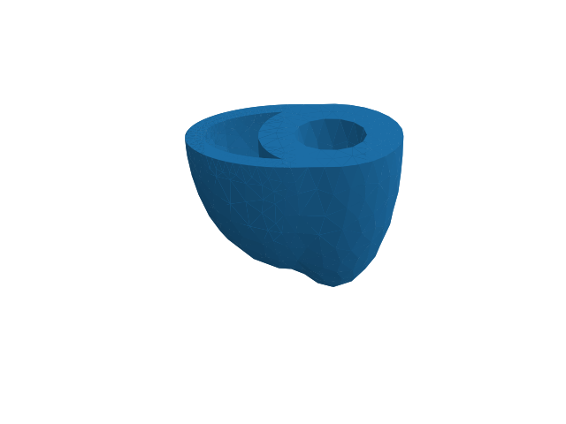

Creating idealized cardiac geometries with mshr¶
[mshr]() is a library that comes with FEniCS that can be used to create geometries. Here we demonstrace how we can create a left ventricular ellipsoid and a bi-ventricular ellipsoid.
Left ventricular ellipsoid¶
Code¶
import matplotlib.pyplot as plt
import dolfin as df
import mshr
from pulse.geometry_utils import generate_fibers
from pulse.geometry import Microstructure, Geometry, MarkerFunctions
base_x = 0.0
# LV
# The center of the LV ellipsoid
center = df.Point(0.0, 0.0, 0.0)
a_epi = 2.0
b_epi = 1.0
c_epi = 1.0
a_endo = 1.5
b_endo = 0.5
c_endo = 0.5
# Markers (first index is the marker, second is the topological dimension)
markers = dict(base_marker=(10, 2),
endo_marker=(30, 2),
epi_marker=(40, 2))
# Some refinement level
N = 13
class Endo(df.SubDomain):
def inside(self, x, on_boundary):
return (x[0]-center.x())**2/a_endo**2 \
+ (x[1]-center.y())**2/b_endo**2 \
+ (x[2]-center.z())**2/c_endo**2 -1.1 < df.DOLFIN_EPS \
and on_boundary
class Base(df.SubDomain):
def inside(self, x, on_boundary):
return x[0] - base_x < df.DOLFIN_EPS and on_boundary
class Epi(df.SubDomain):
def inside(self, x, on_boundary):
return (x[0]-center.x())**2/a_epi**2 \
+ (x[1]-center.y())**2/b_epi**2 \
+ (x[2]-center.z())**2/c_epi**2 - 0.9 > df.DOLFIN_EPS \
and on_boundary
# The plane cutting the base
diam = -10.0
box = mshr.Box(df.Point(base_x, 2, 2), df.Point(diam, diam, diam))
# Generate mesh
# LV epicardium
el_lv = mshr.Ellipsoid(center, a_epi, b_epi, c_epi)
# LV endocardium
el_lv_endo = mshr.Ellipsoid(center, a_endo, b_endo, c_endo)
# LV geometry (subtract the smallest ellipsoid)
lv = el_lv - el_lv_endo
# LV geometry
m = lv - box
# Create mesh
mesh = mshr.generate_mesh(m, N)
# Create facet function
ffun = df.MeshFunction("size_t", mesh, 2)
ffun.set_all(0)
endo = Endo()
endo.mark(ffun, markers['endo_marker'][0])
base = Base()
base.mark(ffun, markers['base_marker'][0])
epi = Epi()
epi.mark(ffun, markers['epi_marker'][0])
# Mark mesh
for facet in df.facets(mesh):
mesh.domains().set_marker((facet.index(), ffun[facet]), 2)
marker_functions = MarkerFunctions(ffun=ffun)
# Make fiber field
fiber_params = df.Parameters("Fibers")
fiber_params.add("fiber_space", "CG_1")
# fiber_params.add("fiber_space", "Quadrature_4")
fiber_params.add("include_sheets", False)
fiber_params.add("fiber_angle_epi", -60)
fiber_params.add("fiber_angle_endo", 60)
try:
fields = generate_fibers(mesh, fiber_params)
except ImportError:
fields = []
fields_names = []
else:
fields_names = ['f0', 's0', 'n0']
microstructure = Microstructure(**dict(zip(fields_names, fields)))
geometry = Geometry(mesh, markers=markers,
marker_functions=marker_functions,
microstructure=microstructure)
geometry.save('lv_geometry')
df.plot(mesh)
ax = plt.gca()
ax.view_init(elev=-67, azim=-179)
ax.set_axis_off()
plt.savefig('lv_geometry.png')
plt.close()
if fields:
df.plot(fields[0])
ax = plt.gca()
ax.view_init(elev=-67, azim=-179)
ax.set_axis_off()
plt.savefig('lv_geometry_fiber.png')


Bi-ventricular ellipsoid¶
Code¶
import matplotlib.pyplot as plt
import dolfin as df
import mshr
from pulse.geometry_utils import generate_fibers
from pulse.geometry import Microstructure, Geometry, MarkerFunctions
base_x = 0.0
### LV
# The center of the LV ellipsoid
center_lv = df.Point(0.0, 0.0, 0.0)
a_lv_epi = 2.0
b_lv_epi = 1.0
c_lv_epi = 1.0
a_lv_endo = 1.5
b_lv_endo = 0.5
c_lv_endo = 0.5
### RV
# The center of the RV ellipsoid (slightl translated)
center_rv = df.Point(0.0, 0.5, 0.0)
a_rv_epi = 1.75
b_rv_epi = 1.5
c_rv_epi = 1.0
a_rv_endo = 1.45
b_rv_endo = 1.25
c_rv_endo = 0.75
## Markers
base_marker = 10
endolv_marker = 30
epi_marker = 40
markers = dict(base_marker=(10, 2),
endorv_marker = (20, 2),
endolv_marker=(30, 2),
epi_marker=(40, 2))
class EndoLV(df.SubDomain):
def inside(self, x, on_boundary):
return (x[0]-center_lv.x())**2/a_lv_endo**2 \
+ (x[1]-center_lv.y())**2/b_lv_endo**2 \
+ (x[2]-center_lv.z())**2/c_lv_endo**2 -1 < df.DOLFIN_EPS and on_boundary
class Base(df.SubDomain):
def inside(self, x, on_boundary):
return x[0] - base_x < df.DOLFIN_EPS and on_boundary
class EndoRV(df.SubDomain):
def inside(self, x, on_boundary):
return ((x[0]-center_rv.x())**2/a_rv_endo**2 \
+ (x[1]-center_rv.y())**2/b_rv_endo**2 \
+ (x[2]-center_rv.z())**2/c_rv_endo**2 - 1 < df.DOLFIN_EPS \
and (x[0]-center_lv.x())**2/a_lv_epi**2 \
+ (x[1]-center_lv.y())**2/b_lv_epi**2 \
+ (x[2]-center_lv.z())**2/c_lv_epi**2 - 0.9 > df.DOLFIN_EPS) and on_boundary
class Epi(df.SubDomain):
def inside(self, x, on_boundary):
return (x[0]-center_rv.x())**2/a_rv_epi**2 \
+ (x[1]-center_rv.y())**2/b_rv_epi**2 \
+ (x[2]-center_rv.z())**2/c_rv_epi**2 - 0.9 > df.DOLFIN_EPS \
and (x[0]-center_lv.x())**2/a_lv_epi**2 \
+ (x[1]-center_lv.y())**2/b_lv_epi**2 \
+ (x[2]-center_lv.z())**2/c_lv_epi**2 - 0.9 > df.DOLFIN_EPS and on_boundary
# The plane cutting the base
diam = -10.0
box = mshr.Box(df.Point(base_x,2,2),df.Point(diam,diam,diam))
# Generate mesh
# LV epicardium
el_lv = mshr.Ellipsoid(center_lv, a_lv_epi, b_lv_epi, c_lv_epi)
# LV endocardium
el_lv_endo = mshr.Ellipsoid(center_lv, a_lv_endo, b_lv_endo, c_lv_endo)
# LV geometry (subtract the smallest ellipsoid)
lv = el_lv - el_lv_endo
# LV epicardium
el_rv = mshr.Ellipsoid(center_rv, a_rv_epi, b_rv_epi, c_rv_epi)
# LV endocardium
el_rv_endo = mshr.Ellipsoid(center_rv, a_rv_endo, b_rv_endo, c_rv_endo)
# RV geometry (subtract the smallest ellipsoid)
rv = el_rv - el_rv_endo - el_lv
# BiV geometry
m = lv + rv - box
# Some refinement level
N = 13
# Create mesh
mesh = mshr.generate_mesh(m, N)
# Create facet function
ffun = df.MeshFunction("size_t", mesh, 2)
ffun.set_all(0)
endolv = EndoLV()
endolv.mark(ffun, markers['endolv_marker'][0])
base = Base()
base.mark(ffun, markers['base_marker'][0])
endorv = EndoRV()
endorv.mark(ffun, markers['endorv_marker'][0])
epi = Epi()
epi.mark(ffun, markers['epi_marker'][0])
# Mark mesh
for facet in df.facets(mesh):
mesh.domains().set_marker((facet.index(), ffun[facet]), 2)
marker_functions = MarkerFunctions(ffun=ffun)
# Make fiber field
fiber_params = df.Parameters("Fibers")
fiber_params.add("fiber_space", "CG_1")
# fiber_params.add("fiber_space", "Quadrature_4")
fiber_params.add("include_sheets", False)
fiber_params.add("fiber_angle_epi", -60)
fiber_params.add("fiber_angle_endo", 60)
try:
fields = generate_fibers(mesh, fiber_params)
except ImportError:
fields = []
fields_names = []
else:
fields_names = ['f0', 's0', 'n0']
microstructure = Microstructure(**dict(zip(fields_names, fields)))
geometry = Geometry(mesh, markers=markers,
marker_functions=marker_functions,
microstructure=microstructure)
geometry.save('biv_geometry')
df.plot(mesh)
ax = plt.gca()
ax.view_init(elev=-67, azim=-179)
ax.set_axis_off()
ax.set_aspect(0.5)
plt.savefig('biv_geometry.png')
plt.close()
if fields:
df.plot(fields[0])
ax = plt.gca()
ax.view_init(elev=-67, azim=-179)
ax.set_axis_off()
ax.set_aspect(0.5)
plt.savefig('biv_geometry_fiber.png')
Plot¶
